扉页
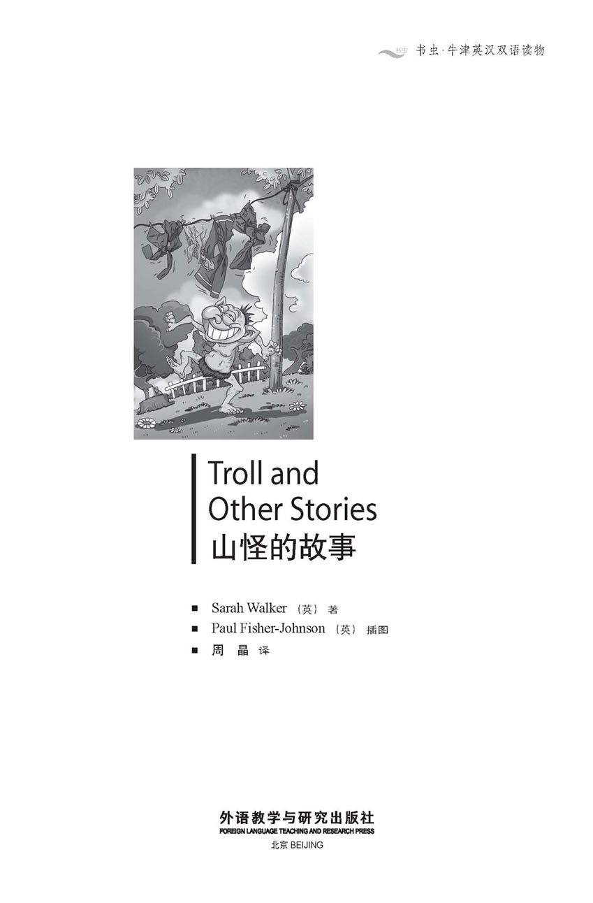
版权页
京权图字：01-2013-7824
Published by arrangement with Oxford University Press for sale in the People's Republic of China only and not for export therefrom. This edition is for sale in the mainland of China only, excluding Hong Kong SAR, Macao SAR and Taiwan.
© Oxford University Press 2012
Oxford is a registered trademark of Oxford University Press
图书在版编目（CIP）数据
山怪的故事：英汉对照／（英）沃克（Walker, S.）著；（英）约翰逊（Johnson, P. F.）绘；周晶译．—北京：外语教学与研究出版社，2014.2
（书虫·牛津英汉双语读物）
书名原文：Troll and other stories
ISBN 978-7-5135-4070-4
Ⅰ．①山… Ⅱ．①沃… ②约… ③周… Ⅲ．①英语－汉语－对照读物②中篇小说－英国－现代 Ⅳ．①H319.4：I
中国版本图书馆CIP数据核字（2014）第029031号
出版人 蔡剑峰
责任编辑 徐 宁
封面设计 蔡 颖
出版发行 外语教学与研究出版社
社 址 北京市西三环北路19号（100089）
网 址 http://www.fltrp.com
版 次 2014年3月第1版
书 号 ISBN 978-7-5135-4070-4
凡侵权、盗版书籍线索，请联系我社法律事务部
举报电话：（010）88817519 电子邮箱：banquan@fltrp.com
法律顾问：立方律师事务所 刘旭东律师
中咨律师事务所 殷 斌律师
内容简介
内容简介
有人说他们不相信世上有幽灵或怪物，也不相信任何神秘事件。他们会哈哈大笑，说这些不过是哄小孩子的故事。在大白天周围人群环绕的时候，将这些故事付之一笑很容易。但是为什么世界上每个国家都有鬼怪的故事呢？为什么总是有人在讲鬼怪的故事呢？科学能解释一切事物吗？
阿卜杜勒是个新派的年轻人，生活在阿曼，他带着给弟弟奥马尔的礼物——一个电脑游戏——回家过周末，他一辈子都不会忘记那趟旅程。亚洲的一场漫长战争结束后，一名士兵回家去见他的母亲，但事情却有些不太对劲……
不过，我们的故事是从瑞典的索尼娅开始的。在瑞典，人人都听过山怪的故事，但索尼娅却知道这些故事是真的，因为她的爷爷……
（本书故事属非现实题材）
TROLL AND OTHER STORIES
Some people say that they don't believe in ghosts, or monsters, or mysterious happenings of any kind. They laugh, and say that these are just stories for children. It is easy to laugh in daylight, with people around you. But why are there stories about ghosts in every country of the world? Why do people go on telling ghost stories? Can science explain everything that happens?
Abdul is a modern young man in Oman, going home for the weekend, with a present of a computer game for his little brother Omar. He will never forget that journey for the rest of his life. And a soldier in Asia returns home to his mother after a long war, but there is something not quite right...
But we begin with Sonja in Sweden. Everybody has heard stories about the monsters called trolls in Sweden, but Sonja knows the stories are true, because of her grandfather...
目录
Troll—A story from Sweden
Troll
A story from Sweden
In Norway, Sweden, Denmark, Finland, and Iceland, people tell many different stories about trolls. Trolls are big, ugly creatures, who live in the mountains... Or they are small and horrible, and make trouble around the house. Some stories say you can see them, some say you can only feel that a troll is near.
This story comes from a Swedish woman called Sonja. It is a true story, she says, and it really happened to her.
When I was a little girl, many years ago, I lived with my mother and father and grandfather in my grandfather's house. It was an old house with a big garden, which had a lot of fruit trees in it.
My mother and my father both worked all day, so my grandfather took care of me. I loved my grandfather and I followed him everywhere. When he was working, I liked to watch, and I always tried to help.
One sunny morning after breakfast my grandfather went out into the garden and I went with him. He looked at one of the old apple trees, shook his head, then went back into the house. I followed him. He went to his tool cupboard and began to look through his tools.
At the back of the cupboard was a metal saw, for cutting wood. But now the saw was old and broken.
'Are you going to cut some wood, Grandpa?' I said. 'Can I help you?'
'No, little Sonja,' Grandpa said. 'This old saw is broken now. But it can still do a job, and you can help. I'll need a hammer and some nails too. Please carry the nails for me. I'll carry the hammer because it's heavy.'
Grandpa carried the broken saw and the hammer into the garden. I followed him with the nails. I said to myself, 'I'm helping Grandpa!'
In the garden, Grandpa went to one of the old apple trees. He put the broken saw into the tree, high up. First he made a little cut in the tree, and then pushed the saw hard into the cut. Then he took three nails from me, and hammered them into the tree, around the old saw.
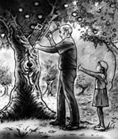
Grandpa put the broken saw into the tree, high up.
It was a very old tree, and I saw that there were lots of old nails in it.
Grandpa finished. 'There,' he said. 'That's good. The saw won't fall out of the tree now.'
I was only six years old, and I did not understand.
'Grandpa,' I asked. 'Why did you do that?'
'Because of trolls,' Grandpa said.
I knew that a troll was a kind of monster. People said they were ugly and frightening and dangerous, and that they did bad things. But I did not know what things.
'Trolls don't like metal,' said Grandpa. 'If you put something metal in a tree, like that old saw, then the trolls will stay away. They will not come into your garden or into your house while the metal is there.'
He touched the tree, with the old nails in it.
'My father put metal in these trees,' he said, 'and my grandfather did it before him, and his father before that. And I do the same. Young people today don't follow these ways, but I'm teaching you, little Sonja, so you'll know. And that's why we put that old saw in this tree.'
'What will happen if you don't put something metal in a tree?' I asked.
'If you don't do it, then perhaps a troll will come,' said Grandpa. 'If you are lucky, it will not stay. It will just pass through the garden, maybe. But if you are unlucky – very unlucky – the troll will come into your house. If you are really unlucky, the troll will stay. It will sit in your kitchen. You won't see it, but you will know it is there.'
'If a troll comes and sits in the kitchen, what will it do?' I asked.
Grandpa looked very serious.
'A troll does not need to do anything,' he said. 'Just a troll sitting in your house, in your kitchen! Nothing can be right in a house if a troll is there! Nothing can go right in the family! All the good luck, all the happiness goes out of the house when a troll sits in your kitchen. That is terrible enough!'
After a few years, my mother and father and I left my grandfather's house, and moved into a modern house with a little garden of our own. I forgot about trolls. My mother and father never talked about trolls, and nobody put metal in the trees in our garden.
There were two young trees in the garden and between them there was a washing line. On sunny days we put our wet clothes out on the washing line to get dry.
On my grandfather's first visit, he sat in the kitchen with my mother and father, drinking coffee and talking, and looking out of the window at our garden.
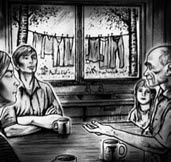
My grandfather sat in the kitchen, drinking coffee and talking.
It was a beautiful sunny day. There were wet clothes on the washing line, but they did not move because there was no wind. Everything was still in the garden that day.
I sat in the kitchen and listened to my grandfather and my parents for a while. But the garden looked so beautiful! I decided to go out and play, and I went to the garden door to go out.
Suddenly my grandfather said, 'Sonja, stop!'
I stopped, with my hand on the door.
Grandpa was looking through the window at the garden outside.
'Troll!' he said. His face was white.
In the garden, the sun was shining. There was no wind. No leaves moved on the trees, everything was still.
But the wet clothes on the washing line were moving, all by themselves. They were turning, and turning – this way, and that way...
They were tying themselves into knots.
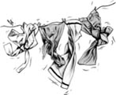
ugly adj. not pleasant to look at; the opposite of beautiful 丑陋的
tool n. a thing you hold in your hand and use to do a special job 工具
saw n. a metal tool for cutting wood 锯子
hammer n. a tool with a heavy metal head, used for hitting nails 锤子
nail n. a small thin piece of metal with a sharp end, used to fix things together 钉子
serious adj. not funny, not joking or playing 严肃的
washing line a long piece of plastic or rope, for hanging wet clothes 晾衣绳
tie v. to make a knot in something 打结
knot n. a place where two ends of cloth or string are tied together 结
山怪
瑞典故事
在挪威、瑞典、丹麦、芬兰和冰岛流传着各种各样关于山怪的故事。有的故事说山怪是一种巨大而丑陋的怪物，住在大山里；有的故事则说它们矮小而可怕，会搅得家宅不宁。有的故事说你能看见它们，也有的故事说你只能感觉到它们在附近。
以下这个故事是一个叫索尼娅的瑞典女人讲述的。她说这是一个真实的故事，是她的亲身经历。
许多年前，当我还是个小女孩的时候，我跟父母和爷爷一起住在爷爷家里。那是一座老房子，有个很大的花园，里面种了好多果树。
我父母整天都要工作，所以是爷爷照顾我。我很爱爷爷，他走到哪里我都跟着。他干活儿的时候，我喜欢在一旁看着，而且总想帮忙。
一天早上，阳光很好，早饭后我跟着爷爷来到花园里。他看了看其中一株老苹果树，摇了摇头，又回到了屋子里。我跟在爷爷后面，只见他走到工具柜前，开始翻找起自己的工具来。
柜子最里面有把金属锯子，是锯木头用的，不过现在已经又旧又破了。
“你要锯木头吗，爷爷？”我说，“我能帮你吗？”
“不，小索尼娅。”爷爷说，“这把旧锯子已经坏了。不过它还有个用处，你也能帮上忙。我还需要一个锤子和一些钉子。就请你帮我拿着钉子吧。锤子太重，我来拿。”
爷爷把破锯子和锤子拿到花园里。我拿着钉子跟在后面，心想：“我在给爷爷帮忙呢！”
走进花园，爷爷来到其中一株老苹果树跟前。他把破锯子高高地插到树上。他先在树上锯出一条小口子，然后用力把锯子插进这条口子里。接着，他从我手里拿了三颗钉子，用锤子钉到树上，就钉在旧锯子周围。
那是一株很老的树，我看到树上有很多旧钉子。
爷爷钉好了钉子。“好了，”他说，“这样就行了。现在锯子不会从树上掉下来了。”
那时我只有六岁，不明白这是怎么回事。
“爷爷，”我问，“你为什么要这样做？”
“为了防山怪。”爷爷说。
我知道山怪是一种怪物，据说它们又难看又可怕又危险，而且还做坏事。不过我不知道是怎样的坏事。
“山怪不喜欢金属。”爷爷说，“如果你把金属的东西放在树上，就像那把旧锯子，山怪就会避开。只要有金属的东西在，它们就不会进你的花园，也不会进你的房子。”
他摸了摸钉满旧钉子的树。
“我父亲在这些树上放置过金属物件，”他说，“在他之前，我爷爷也这么做，再往前我爷爷的父亲也这么做。我也这么做。如今的年轻人不再遵循这些传统啦，但是我现在把这个教给你，小索尼娅，好让你知道。这就是我们把旧锯子放到树上的原因。”
“如果你不在树上放金属的东西会怎么样？”我问。
“如果你不这么做，那山怪就可能会来。”爷爷说，“要是你走运，它不会久留，可能只是从花园经过。但是如果你不走运——非常不走运——那山怪就会进入你的房子。如果你倒霉透顶，那山怪就会留下来。它会坐在你的厨房里。你看不见它，但是你能感觉到它在那儿。”
“如果有山怪来了，坐到了厨房里，它又会做什么呢？”我问。
爷爷看起来非常严肃。
“山怪不需要做任何事。”他说，“只要你的房子里有只山怪，还坐在你的厨房里，这就够糟了！家里有山怪，就会家宅不宁，诸事不顺！当你的厨房里坐着一只山怪的时候，所有的好运和快乐都会从家中消失。那就够可怕的了！”
几年后，我随父母离开爷爷家，搬进了一座现代的房子里，有了一个我们自己的小花园。我忘记了关于山怪的事。我的父母从没有说起过山怪，也没人在我们花园里的树上放置金属物件。
花园里有两棵小树，中间拴了条晾衣绳。太阳好的时候，我们把湿衣服挂出去，在晾衣绳上晒干。
爷爷第一次来做客的时候，跟我父母一起坐在厨房里一边喝着咖啡聊天，一边望着窗外的花园。
那天天气晴朗，太阳高照。晾衣绳上挂着湿衣服，但是因为没有风，所以衣服一动不动。那天花园里的一切都是静止的。
我坐在厨房里听爷爷和我父母聊了一会儿。但花园看起来那么漂亮！我决定到外面去玩，于是走向通往花园的门。
突然，爷爷说：“索尼娅，别动！”
我停住脚步，手已经搭在门上了。
爷爷正透过窗子看向花园。
“山怪！”他说。他的脸色发白。
花园里阳光灿烂，一丝风都没有，树上的叶子一动不动，一切都是静止的。
但是晾衣绳上的湿衣服却自己动了起来。它们转来转去——一下朝这边，一下又朝那边……
它们把自己打成了结。
山怪——瑞典故事
Troll
A story from Sweden
In Norway, Sweden, Denmark, Finland, and Iceland, people tell many different stories about trolls. Trolls are big, ugly creatures, who live in the mountains... Or they are small and horrible, and make trouble around the house. Some stories say you can see them, some say you can only feel that a troll is near.
This story comes from a Swedish woman called Sonja. It is a true story, she says, and it really happened to her.
When I was a little girl, many years ago, I lived with my mother and father and grandfather in my grandfather's house. It was an old house with a big garden, which had a lot of fruit trees in it.
My mother and my father both worked all day, so my grandfather took care of me. I loved my grandfather and I followed him everywhere. When he was working, I liked to watch, and I always tried to help.
One sunny morning after breakfast my grandfather went out into the garden and I went with him. He looked at one of the old apple trees, shook his head, then went back into the house. I followed him. He went to his tool cupboard and began to look through his tools.
At the back of the cupboard was a metal saw, for cutting wood. But now the saw was old and broken.
'Are you going to cut some wood, Grandpa?' I said. 'Can I help you?'
'No, little Sonja,' Grandpa said. 'This old saw is broken now. But it can still do a job, and you can help. I'll need a hammer and some nails too. Please carry the nails for me. I'll carry the hammer because it's heavy.'
Grandpa carried the broken saw and the hammer into the garden. I followed him with the nails. I said to myself, 'I'm helping Grandpa!'
In the garden, Grandpa went to one of the old apple trees. He put the broken saw into the tree, high up. First he made a little cut in the tree, and then pushed the saw hard into the cut. Then he took three nails from me, and hammered them into the tree, around the old saw.
Grandpa put the broken saw into the tree, high up.
It was a very old tree, and I saw that there were lots of old nails in it.
Grandpa finished. 'There,' he said. 'That's good. The saw won't fall out of the tree now.'
I was only six years old, and I did not understand.
'Grandpa,' I asked. 'Why did you do that?'
'Because of trolls,' Grandpa said.
I knew that a troll was a kind of monster. People said they were ugly and frightening and dangerous, and that they did bad things. But I did not know what things.
'Trolls don't like metal,' said Grandpa. 'If you put something metal in a tree, like that old saw, then the trolls will stay away. They will not come into your garden or into your house while the metal is there.'
He touched the tree, with the old nails in it.
'My father put metal in these trees,' he said, 'and my grandfather did it before him, and his father before that. And I do the same. Young people today don't follow these ways, but I'm teaching you, little Sonja, so you'll know. And that's why we put that old saw in this tree.'
'What will happen if you don't put something metal in a tree?' I asked.
'If you don't do it, then perhaps a troll will come,' said Grandpa. 'If you are lucky, it will not stay. It will just pass through the garden, maybe. But if you are unlucky – very unlucky – the troll will come into your house. If you are really unlucky, the troll will stay. It will sit in your kitchen. You won't see it, but you will know it is there.'
'If a troll comes and sits in the kitchen, what will it do?' I asked.
Grandpa looked very serious.
'A troll does not need to do anything,' he said. 'Just a troll sitting in your house, in your kitchen! Nothing can be right in a house if a troll is there! Nothing can go right in the family! All the good luck, all the happiness goes out of the house when a troll sits in your kitchen. That is terrible enough!'
After a few years, my mother and father and I left my grandfather's house, and moved into a modern house with a little garden of our own. I forgot about trolls. My mother and father never talked about trolls, and nobody put metal in the trees in our garden.
There were two young trees in the garden and between them there was a washing line. On sunny days we put our wet clothes out on the washing line to get dry.
On my grandfather's first visit, he sat in the kitchen with my mother and father, drinking coffee and talking, and looking out of the window at our garden.
My grandfather sat in the kitchen, drinking coffee and talking.
It was a beautiful sunny day. There were wet clothes on the washing line, but they did not move because there was no wind. Everything was still in the garden that day.
I sat in the kitchen and listened to my grandfather and my parents for a while. But the garden looked so beautiful! I decided to go out and play, and I went to the garden door to go out.
Suddenly my grandfather said, 'Sonja, stop!'
I stopped, with my hand on the door.
Grandpa was looking through the window at the garden outside.
'Troll!' he said. His face was white.
In the garden, the sun was shining. There was no wind. No leaves moved on the trees, everything was still.
But the wet clothes on the washing line were moving, all by themselves. They were turning, and turning – this way, and that way...
They were tying themselves into knots.
ugly adj. not pleasant to look at; the opposite of beautiful 丑陋的
tool n. a thing you hold in your hand and use to do a special job 工具
saw n. a metal tool for cutting wood 锯子
hammer n. a tool with a heavy metal head, used for hitting nails 锤子
nail n. a small thin piece of metal with a sharp end, used to fix things together 钉子
serious adj. not funny, not joking or playing 严肃的
washing line a long piece of plastic or rope, for hanging wet clothes 晾衣绳
tie v. to make a knot in something 打结
knot n. a place where two ends of cloth or string are tied together 结
山怪
瑞典故事
在挪威、瑞典、丹麦、芬兰和冰岛流传着各种各样关于山怪的故事。有的故事说山怪是一种巨大而丑陋的怪物，住在大山里；有的故事则说它们矮小而可怕，会搅得家宅不宁。有的故事说你能看见它们，也有的故事说你只能感觉到它们在附近。
以下这个故事是一个叫索尼娅的瑞典女人讲述的。她说这是一个真实的故事，是她的亲身经历。
许多年前，当我还是个小女孩的时候，我跟父母和爷爷一起住在爷爷家里。那是一座老房子，有个很大的花园，里面种了好多果树。
我父母整天都要工作，所以是爷爷照顾我。我很爱爷爷，他走到哪里我都跟着。他干活儿的时候，我喜欢在一旁看着，而且总想帮忙。
一天早上，阳光很好，早饭后我跟着爷爷来到花园里。他看了看其中一株老苹果树，摇了摇头，又回到了屋子里。我跟在爷爷后面，只见他走到工具柜前，开始翻找起自己的工具来。
柜子最里面有把金属锯子，是锯木头用的，不过现在已经又旧又破了。
“你要锯木头吗，爷爷？”我说，“我能帮你吗？”
“不，小索尼娅。”爷爷说，“这把旧锯子已经坏了。不过它还有个用处，你也能帮上忙。我还需要一个锤子和一些钉子。就请你帮我拿着钉子吧。锤子太重，我来拿。”
爷爷把破锯子和锤子拿到花园里。我拿着钉子跟在后面，心想：“我在给爷爷帮忙呢！”
走进花园，爷爷来到其中一株老苹果树跟前。他把破锯子高高地插到树上。他先在树上锯出一条小口子，然后用力把锯子插进这条口子里。接着，他从我手里拿了三颗钉子，用锤子钉到树上，就钉在旧锯子周围。
那是一株很老的树，我看到树上有很多旧钉子。
爷爷钉好了钉子。“好了，”他说，“这样就行了。现在锯子不会从树上掉下来了。”
那时我只有六岁，不明白这是怎么回事。
“爷爷，”我问，“你为什么要这样做？”
“为了防山怪。”爷爷说。
我知道山怪是一种怪物，据说它们又难看又可怕又危险，而且还做坏事。不过我不知道是怎样的坏事。
“山怪不喜欢金属。”爷爷说，“如果你把金属的东西放在树上，就像那把旧锯子，山怪就会避开。只要有金属的东西在，它们就不会进你的花园，也不会进你的房子。”
他摸了摸钉满旧钉子的树。
“我父亲在这些树上放置过金属物件，”他说，“在他之前，我爷爷也这么做，再往前我爷爷的父亲也这么做。我也这么做。如今的年轻人不再遵循这些传统啦，但是我现在把这个教给你，小索尼娅，好让你知道。这就是我们把旧锯子放到树上的原因。”
“如果你不在树上放金属的东西会怎么样？”我问。
“如果你不这么做，那山怪就可能会来。”爷爷说，“要是你走运，它不会久留，可能只是从花园经过。但是如果你不走运——非常不走运——那山怪就会进入你的房子。如果你倒霉透顶，那山怪就会留下来。它会坐在你的厨房里。你看不见它，但是你能感觉到它在那儿。”
“如果有山怪来了，坐到了厨房里，它又会做什么呢？”我问。
爷爷看起来非常严肃。
“山怪不需要做任何事。”他说，“只要你的房子里有只山怪，还坐在你的厨房里，这就够糟了！家里有山怪，就会家宅不宁，诸事不顺！当你的厨房里坐着一只山怪的时候，所有的好运和快乐都会从家中消失。那就够可怕的了！”
几年后，我随父母离开爷爷家，搬进了一座现代的房子里，有了一个我们自己的小花园。我忘记了关于山怪的事。我的父母从没有说起过山怪，也没人在我们花园里的树上放置金属物件。
花园里有两棵小树，中间拴了条晾衣绳。太阳好的时候，我们把湿衣服挂出去，在晾衣绳上晒干。
爷爷第一次来做客的时候，跟我父母一起坐在厨房里一边喝着咖啡聊天，一边望着窗外的花园。
那天天气晴朗，太阳高照。晾衣绳上挂着湿衣服，但是因为没有风，所以衣服一动不动。那天花园里的一切都是静止的。
我坐在厨房里听爷爷和我父母聊了一会儿。但花园看起来那么漂亮！我决定到外面去玩，于是走向通往花园的门。
突然，爷爷说：“索尼娅，别动！”
我停住脚步，手已经搭在门上了。
爷爷正透过窗子看向花园。
“山怪！”他说。他的脸色发白。
花园里阳光灿烂，一丝风都没有，树上的叶子一动不动，一切都是静止的。
但是晾衣绳上的湿衣服却自己动了起来。它们转来转去——一下朝这边，一下又朝那边……
它们把自己打成了结。
A Gift for Omar—A story from Oman
A Gift for Omar
A story from Oman
All over the world there are stories about meeting strange travellers in lonely places. Who are they? Where have they come from? Where are they going?
This is one of those stories. It happens in Oman, on Route 21, the long road that runs across the lonely hills behind the great Al Hajar mountains.
Oman is a big country, and the roads in Oman are very long. 'Long and empty,' thought Abdul.
He was standing next to his car, by the side of Route 21, the long road that runs from Buraimi to Nizwa. He was waiting for a car to pass by, but the road was empty. There were no houses and no traffic.
Abdul was angry with his car, because it did not go any more. He was angry with himself, because he did not check the car before he left Buraimi. And he was angry with his mobile phone too, because there was no signal. He couldn't use it to phone for help.
Every Wednesday evening, Abdul drove from his office in Buraimi to his family home in Nizwa. He liked to spend the weekend, which in Oman is Thursday and Friday, at home with his family.
He put his hand in his pocket and touched a hard, flat box. It was a computer game – a gift, a present for his youngest brother, Omar. Omar was eight years old and loved computer games. This was a new game, the very newest game. Only one of the computer shops in Buraimi had it, and Abdul was the first person to buy it.
'Omar will be so excited!' he thought. 'He'll have this game before any of his friends have it.'
He bought the game, left Buraimi, and started driving to Nizwa. He wanted to get home before Omar was asleep. So he did not wait to check his car before he left Buraimi, which was a mistake. A big mistake.
Now he was standing by the side of the road, with a dead car, in the middle of nowhere.
'How long will I have to wait before another car comes along?' he thought. 'It's getting dark.'
He looked up at the sky. The sun was down behind the mountains, and the stars were beginning to come out. A hot dry wind was blowing. There was no moon.
At that moment he saw car lights.
'It's my lucky night after all,' he thought. The car was coming very fast over the hills. Its lights looked unusual – very yellow, like the eyes of a cat … or a tiger.
'That's strange,' thought Abdul. Then he saw that the car would be past him in a second. He moved into the road, put both his arms above his head, and waved.
The car made a noise like a scream and stopped right in front of him. It was a long, black car. Abdul did not know what kind of car it was, but it looked fast.
The door opened and the driver looked out at Abdul. He was wearing dark glasses and had a big smile – a very big smile. Abdul started to say something about his car, about going to Nizwa. The driver did not say anything, but he waved his hand at the seat next to him. Abdul got in and closed the door. The car screamed again and drove quickly away.
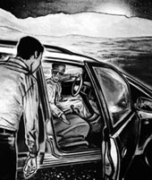
The driver was wearing dark glasses and had a big smile.
Inside the car it was dark and quiet. The only light was a kind of red or orange.
'Where's that light coming from?' thought Abdul. He spoke to the driver, telling him again that he was going to Nizwa.
The driver did not answer. He just smiled his big smile and looked at the road. His glasses were very dark.
'I can't see his eyes behind those glasses, but I think he's looking at the road,' thought Abdul. 'I hope he is. He's driving so fast!'
The driver was wearing a traditional long robe, which hid his legs and feet.
Abdul looked out of the window. The car was moving very fast.
'That's good,' Abdul told himself. 'Fast is good. I'll get home to Nizwa quickly, driving like this. I'll see my family and give Omar his gift, his computer game. This driver's a bit strange – I really don't like that smile! – but it doesn't matter. The important thing is to get home.'
It was night now. The dark road, passing quickly, looked different from usual.
'Where are we?' thought Abdul, looking out of the window again. 'I know this road very well – I drive along it twice a week. Why does it look different tonight?'
Inside the car, the red and orange light looked a little brighter.
'Where's that light coming from?' thought Abdul. 'What is it? It's moving all the time. It looks like... it looks like fire. But it can't be. There can't be a fire in here, inside this car.'
He looked at the driver and quickly looked away again. The smile was even bigger than before.
'That smile is horrible,' he thought. 'I don't want to look at it. I'm sure he knows I'm looking at him. But how can he see through those dark glasses? Don't think about it! The important thing is to get home.'
Abdul thought about the big family house in Nizwa, with its big wooden front door. It was safe there.
The thought of home made him feel better. 'Everything will be fine when I get home. I'll open the door and walk in. It will be late, and everyone will be asleep, but I'll see them all in the morning, and I'll give Omar his gift then.'
He put his hand into his pocket and touched the hard flat box of the computer game, the gift for his little brother.
'There it is,' he thought. 'Omar's gift. I hope he likes it.'
'Yes,' said the driver. 'He will enjoy your gift.'
Abdul was very surprised – and afraid. 'What's happening?' he thought. 'I didn't speak! I was thinking, not speaking, but the driver answered my thought. He knows what I'm thinking! He can hear my thoughts.'
He looked at the driver. The driver was looking at the road in front of him, and he was still smiling that big, horrible smile. The light in the car was brighter, more red and orange.
And then Abdul understood. The strange light was coming from the driver – from behind his dark glasses.
'His eyes!' Abdul thought. 'His eyes are made of fire!'
It was only a thought. But Abdul knew now that the driver could hear him. He felt cold with fear. He tried to stop thinking about eyes of fire, about the road which looked different, and about the car which screamed like an animal. He thought about his family, about rain falling on the trees in Nizwa, about playing football with Omar.
The driver's smile got bigger. He turned to look at Abdul, and put his hand up to his dark glasses.
'Oh no!' thought Abdul. 'He's going to take his glasses off!'
Abdul forgot about getting home. He forgot about seeing his family. He even forgot about his little brother Omar, and the gift for him in his pocket. He thought about only one thing.
He did not want to see the driver's eyes!
Abdul put his hand on the car door next to him.
The driver took off his dark glasses. Abdul looked down, away from the driver's face. The light inside the car suddenly got brighter. It was a moving light, red and orange, like fire. By the strange light, Abdul saw the driver's foot under his long robe.
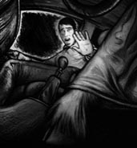
By the strange light, Abdul saw the driver's foot under his long robe.
It was the foot of an animal.
The car door opened suddenly. Abdul fell out.
When Abdul opened his eyes, he was lying on stones.
He got up carefully. Nothing was broken, but he hurt all over. His face felt dirty and there were little stones in his hair. He looked around quickly. He could not see the long black car, but he still felt afraid.
'Perhaps the driver will come back and find me,' he thought. 'If he comes back... What do I do then?'
He looked around again, and for the first time that night, he knew the road. He was near a place called Tanuf, which was not far from Nizwa. He could call a taxi out from Nizwa to take him home.
Home! Abdul stopped feeling afraid. He would soon be home. He put his hand into his pocket and found his mobile phone. There was a good signal, and he called a number in Nizwa and asked for a taxi to take him home. It was late, after midnight.
'They'll all be asleep now,' he thought. 'I won't wake them up. I'll just go in quietly, and see them all in the morning.'
Abdul put his hand in his pocket again. It was empty. The computer game, his gift for Omar, was not there.
Abdul looked for the computer game, walking up and down the road. He moved stones and looked underneath them, but he could not find it anywhere. He was still looking for Omar's gift when the taxi arrived.
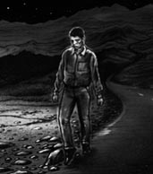
Abdul looked for the computer game, walking up and down the road.
In the taxi, Abdul started to feel better. He did not want to think about the driver, with his horrible smile and his eyes of fire. He thought about being safe.
'The good thing,' he thought, 'is that he... it... that driver, did not take me all the way home. He knows that I live in Nizwa, but that's all. He doesn't know which street, and he doesn't know my name. He can't find me, or my family. So I don't need to worry.'
Abdul felt sorry about his brother's present. But Omar was safe. His family was safe. He didn't have a gift for Omar now, but it was not important.
'I can buy another computer game next week,' he thought. 'This weekend I haven't got a gift for him, but it doesn't matter. We'll have a good time. Maybe we'll play football tomorrow. And that thing... that creature, with those eyes... he can't hurt us. He can't find us.'
It was a long time after midnight when the taxi stopped outside Abdul's home in Nizwa. Abdul paid the driver and walked to the door of his house. Then he stopped.
Outside the door lay a flat, thin box. Abdul knew what it was.
It was the computer game, his gift for Omar.
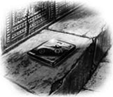
check v. to look at something to see that it is right, good, or safe 检查
signal n. the radio waves that make mobile phones work （手机）信号
game n. an activity that you do to have fun 游戏
tiger n. a large wild cat, with yellow fur and black stripes 老虎
wave v. to move your hand from side to side in the air 挥舞
traditional adj. of something that people in a certain place have done for a long time 传统的
robe n. a long loose piece of clothing 长袍
horrible adj. bad or unpleasant 可怕的，吓人的
thought n. thinking; an idea 想法；念头
fear n. the feeling that you have when you are afraid 恐惧
underneath prep. directly under another object 在……下面
safe adj. free from danger 安全的
creature n. any living thing that is not a plant （非植物的）生物
给奥马尔的礼物
阿曼故事
世界各地都流传着在荒凉的地方遇到奇怪旅行者的故事。他们是谁？他们从哪里来？又要到哪里去？
以下就是这样一个故事。它发生在阿曼的21号公路上，这条绵长的公路在高耸的哈杰尔山脉背后穿越荒凉的丘陵。
阿曼是一个很大的国家，那里的公路很长。“又长又空荡。”阿卜杜勒想。
他此刻正站在自己的车子旁，在连接布赖米和奈兹瓦的绵长的21号公路边。他正等着有车经过，但路上空空荡荡。这里既没有人家，也没有车流。
阿卜杜勒生自己车子的气，因为车子抛锚了。他也生自己的气，因为他在离开布赖米前没有检查一下车子。另外他还生他手机的气，因为这里没有信号，他没法打电话求援。
每个星期三的晚上，阿卜杜勒都要从位于布赖米的办公室开车回奈兹瓦的家。他喜欢在家跟家人一起过周末——阿曼的周末是星期四和星期五。
他把手伸进口袋，碰到了一个扁平的硬盒子。那是一个电脑游戏——是给他最小的弟弟奥马尔的礼物。奥马尔八岁，非常喜欢电脑游戏。这是款新游戏，而且是最新的。布赖米只有一家电脑商店出售这款游戏，而阿卜杜勒是第一个买到游戏的人。
“奥马尔肯定要激动坏了！”他想，“他会比他任何一个朋友都更早得到这款游戏。”
他买了游戏，离开布赖米，开车朝奈兹瓦驶去。他想在奥马尔睡觉前赶回家，所以离开布赖米前，他没花点时间检查车子。显然这是个错误，一个很大的错误。
现在他站在公路边，守着一辆抛了锚的车，前不着村，后不着店。
“我得等多久才能有车来呢？”他想，“天快黑了。”
他抬头看了看天。太阳已经落到了山后面，星星开始钻出来。四下里刮着干热的风。今晚没有月亮。
这时，他看到了车灯。
“今天晚上我还是走运的。”他想。那辆车很快地翻过山丘驶来，车灯看起来不同寻常——很黄，就像是猫眼……或者老虎的眼睛。
“真奇怪。”阿卜杜勒想。这时，他看到那辆车马上就要从他身边经过了。他跑到路上，高举双臂挥舞起来。
那车尖叫似的嘎吱一声，停在了他跟前。那是一辆黑色的长轿车。阿卜杜勒不知道是什么牌子的车，不过它看起来速度很快。
车门开了，司机从车里看向阿卜杜勒。他戴着墨镜，咧嘴露出笑容——嘴咧得很夸张。阿卜杜勒开始解释说，他要去奈兹瓦，但是车抛锚了。那司机没说话，只是伸手朝身旁的座位比划了一下。阿卜杜勒上了车，关上车门。车子又尖叫一声，飞快地开走了。
车子里昏暗又安静，只有一点说不清楚是红色还是橙色的光。
“那光是从哪里来的？”阿卜杜勒想。他再次对司机说，他要去奈兹瓦。
司机没有回答，只是咧着嘴笑，眼睛看着路。他的墨镜非常黑。
“我看不见他墨镜后的眼睛，不过我想他是在看路。”阿卜杜勒想，“我希望他是在看路。他开车可真够快的！”
司机穿着一件传统的长袍，遮住了腿和脚。
阿卜杜勒望向窗外。车子开得飞快。
“挺好，”阿卜杜勒心想，“开得快好。按这种车速，我很快就能回到奈兹瓦的家里。我可以见到家人，给奥马尔他的礼物，那个电脑游戏。这个司机有点古怪——我真不喜欢他的那种笑容！不过没关系，要紧的是回家。”
夜幕降临。飞速后退的漆黑公路看起来跟平常不大一样。
“我们到哪里了？”阿卜杜勒想着，又望了望窗外，“我对这条路很熟——每星期都要开个来回。为什么公路今晚看起来不大一样呢？”
车里面红中带橙的光看起来亮了一些。
“那光是从哪里来的？”阿卜杜勒想，“是什么光？它一直在动，看起来就像……就像是火。但那不可能。车里不可能有火。”
他瞟了司机一眼，又飞快地移开了视线。那笑容比之前更夸张了。
“他的笑容真吓人。”他想，“我不想看他的笑容。我敢肯定，他知道我在看他。不过他戴着那副墨镜，怎么看东西啊？别想了！要紧的是回家。”
阿卜杜勒想着自己家在奈兹瓦的大房子，房子有一扇巨大的木头前门。那里很安全。
想到家让他感觉好了一些。“回到家一切就都好了。我会开门进去。到时候已经很晚了，大家都睡了，不过等到早上我就能见到他们，那时我再把奥马尔的礼物给他。”
他把手伸进口袋，摸了摸装电脑游戏的扁平硬盒子，那是给他弟弟的礼物。
“在这儿呢，”他想，“给奥马尔的礼物。我希望他会喜欢。”
“会的，”司机说，“他会喜欢你的礼物。”
阿卜杜勒大吃一惊——而且吓坏了。“怎么回事？”他想，“我没开口说话啊！我只是在想，没说出来，但司机居然回答了我想的事情。他知道我在想什么！他能读心。”
他看向司机。司机正看着前面的路，仍然咧着嘴，露出那夸张、可怕的笑容。车里的光更亮了，红中带橙的颜色也更深了。
这时阿卜杜勒明白过来。那奇怪的光来自司机——来自他的墨镜后面。
“他的眼睛！”阿卜杜勒想，“他的眼睛是火！”
他只是在心里这样想。但阿卜杜勒知道司机能读他的心。他吓得浑身发冷。他试图不去想那火样的眼睛、看起来异常的道路，还有像动物一样尖叫的车子。他想着自己的家人，想着雨水落在奈兹瓦的树上，想着跟奥马尔一起踢足球。
司机的笑容更夸张了。他扭头看向阿卜杜勒，抬手要取下墨镜。
“哦，不！”阿卜杜勒想，“他要摘掉墨镜！”
阿卜杜勒忘了回家，也忘了要见家人。他甚至忘了他的弟弟奥马尔，还有口袋里要给他的礼物。他只想着一件事。
他不想看到司机的眼睛！
阿卜杜勒抓住了身旁的车门。
司机摘掉了墨镜。阿卜杜勒低下眼睛，避开司机的脸。车里的光突然更亮了。那光在动，红中带橙，像火一样。借着那奇怪的光，阿卜杜勒看到了司机长袍下的脚。
那是一只动物的脚。
车门突然开了。阿卜杜勒摔了出去。
阿卜杜勒睁开眼睛的时候，发现自己躺在石头地上。
他小心地站起身。没有哪里骨折，但是他全身都疼。他感觉脸上很脏，头发里还有小石子。他很快地四下看了看，那辆黑色长轿车不见踪影，但他还是感到害怕。
“或许那司机会回来找到我。”他想，“要是他回来……我该怎么办呢？”
他又四下看了看，今天晚上第一次认出了路。他在一个叫泰努夫的地方附近，离奈兹瓦已经不远了。他可以从奈兹瓦叫一辆出租车来接他回家。
家！阿卜杜勒不害怕了。他很快就能回到家里。他把手伸进口袋找出了手机。这里信号良好，他拨了一个奈兹瓦的号码，叫了一辆出租车来接他回家。这时已过了午夜，夜已深。
“他们现在应该都睡着了。”他想，“我还是别叫醒他们了。我要悄悄进门，到早上再见他们。”
阿卜杜勒又把手伸进口袋里，里面是空的。他要送给奥马尔的那个电脑游戏不见了。
阿卜杜勒在路上走来走去找那个电脑游戏。他连石头底下都翻开看了，可还是到处都找不到。出租车到的时候他还在找给奥马尔的礼物。
坐在出租车里，阿卜杜勒开始感觉好些了。他不愿再想那个有着可怕笑容、火样眼睛的司机。他只想着自己现在安全了。
“幸好，”他想，“他……它……那个司机，没把我直接送到家。他知道我住在奈兹瓦，但仅此而已。他不知道我住哪条街，也不知道我的名字。他找不到我和我的家人，所以我不用担心。”
阿卜杜勒很遗憾弄丢了给弟弟的礼物。但奥马尔是安全的。他的家人是安全的。他现在虽然没有礼物送给奥马尔，但那并不重要。
“我可以下周再买一个电脑游戏。”他想，“这个周末我不能给他礼物了，不过没关系。我们在一起会过得很愉快。或许我们明天可以去踢足球。那个东西……那个有火样眼睛的生物……他不会伤害到我们。他找不到我们。”
出租车停在奈兹瓦阿卜杜勒家的门口时，午夜已经过了很久。阿卜杜勒付了司机车费，走向他家的大门。突然，他停住了。
门外放着一个扁平的盒子。阿卜杜勒知道那是什么。
是那个电脑游戏，他要送给奥马尔的礼物。
给奥马尔的礼物——阿曼故事
A Gift for Omar
A story from Oman
All over the world there are stories about meeting strange travellers in lonely places. Who are they? Where have they come from? Where are they going?
This is one of those stories. It happens in Oman, on Route 21, the long road that runs across the lonely hills behind the great Al Hajar mountains.
Oman is a big country, and the roads in Oman are very long. 'Long and empty,' thought Abdul.
He was standing next to his car, by the side of Route 21, the long road that runs from Buraimi to Nizwa. He was waiting for a car to pass by, but the road was empty. There were no houses and no traffic.
Abdul was angry with his car, because it did not go any more. He was angry with himself, because he did not check the car before he left Buraimi. And he was angry with his mobile phone too, because there was no signal. He couldn't use it to phone for help.
Every Wednesday evening, Abdul drove from his office in Buraimi to his family home in Nizwa. He liked to spend the weekend, which in Oman is Thursday and Friday, at home with his family.
He put his hand in his pocket and touched a hard, flat box. It was a computer game – a gift, a present for his youngest brother, Omar. Omar was eight years old and loved computer games. This was a new game, the very newest game. Only one of the computer shops in Buraimi had it, and Abdul was the first person to buy it.
'Omar will be so excited!' he thought. 'He'll have this game before any of his friends have it.'
He bought the game, left Buraimi, and started driving to Nizwa. He wanted to get home before Omar was asleep. So he did not wait to check his car before he left Buraimi, which was a mistake. A big mistake.
Now he was standing by the side of the road, with a dead car, in the middle of nowhere.
'How long will I have to wait before another car comes along?' he thought. 'It's getting dark.'
He looked up at the sky. The sun was down behind the mountains, and the stars were beginning to come out. A hot dry wind was blowing. There was no moon.
At that moment he saw car lights.
'It's my lucky night after all,' he thought. The car was coming very fast over the hills. Its lights looked unusual – very yellow, like the eyes of a cat … or a tiger.
'That's strange,' thought Abdul. Then he saw that the car would be past him in a second. He moved into the road, put both his arms above his head, and waved.
The car made a noise like a scream and stopped right in front of him. It was a long, black car. Abdul did not know what kind of car it was, but it looked fast.
The door opened and the driver looked out at Abdul. He was wearing dark glasses and had a big smile – a very big smile. Abdul started to say something about his car, about going to Nizwa. The driver did not say anything, but he waved his hand at the seat next to him. Abdul got in and closed the door. The car screamed again and drove quickly away.
The driver was wearing dark glasses and had a big smile.
Inside the car it was dark and quiet. The only light was a kind of red or orange.
'Where's that light coming from?' thought Abdul. He spoke to the driver, telling him again that he was going to Nizwa.
The driver did not answer. He just smiled his big smile and looked at the road. His glasses were very dark.
'I can't see his eyes behind those glasses, but I think he's looking at the road,' thought Abdul. 'I hope he is. He's driving so fast!'
The driver was wearing a traditional long robe, which hid his legs and feet.
Abdul looked out of the window. The car was moving very fast.
'That's good,' Abdul told himself. 'Fast is good. I'll get home to Nizwa quickly, driving like this. I'll see my family and give Omar his gift, his computer game. This driver's a bit strange – I really don't like that smile! – but it doesn't matter. The important thing is to get home.'
It was night now. The dark road, passing quickly, looked different from usual.
'Where are we?' thought Abdul, looking out of the window again. 'I know this road very well – I drive along it twice a week. Why does it look different tonight?'
Inside the car, the red and orange light looked a little brighter.
'Where's that light coming from?' thought Abdul. 'What is it? It's moving all the time. It looks like... it looks like fire. But it can't be. There can't be a fire in here, inside this car.'
He looked at the driver and quickly looked away again. The smile was even bigger than before.
'That smile is horrible,' he thought. 'I don't want to look at it. I'm sure he knows I'm looking at him. But how can he see through those dark glasses? Don't think about it! The important thing is to get home.'
Abdul thought about the big family house in Nizwa, with its big wooden front door. It was safe there.
The thought of home made him feel better. 'Everything will be fine when I get home. I'll open the door and walk in. It will be late, and everyone will be asleep, but I'll see them all in the morning, and I'll give Omar his gift then.'
He put his hand into his pocket and touched the hard flat box of the computer game, the gift for his little brother.
'There it is,' he thought. 'Omar's gift. I hope he likes it.'
'Yes,' said the driver. 'He will enjoy your gift.'
Abdul was very surprised – and afraid. 'What's happening?' he thought. 'I didn't speak! I was thinking, not speaking, but the driver answered my thought. He knows what I'm thinking! He can hear my thoughts.'
He looked at the driver. The driver was looking at the road in front of him, and he was still smiling that big, horrible smile. The light in the car was brighter, more red and orange.
And then Abdul understood. The strange light was coming from the driver – from behind his dark glasses.
'His eyes!' Abdul thought. 'His eyes are made of fire!'
It was only a thought. But Abdul knew now that the driver could hear him. He felt cold with fear. He tried to stop thinking about eyes of fire, about the road which looked different, and about the car which screamed like an animal. He thought about his family, about rain falling on the trees in Nizwa, about playing football with Omar.
The driver's smile got bigger. He turned to look at Abdul, and put his hand up to his dark glasses.
'Oh no!' thought Abdul. 'He's going to take his glasses off!'
Abdul forgot about getting home. He forgot about seeing his family. He even forgot about his little brother Omar, and the gift for him in his pocket. He thought about only one thing.
He did not want to see the driver's eyes!
Abdul put his hand on the car door next to him.
The driver took off his dark glasses. Abdul looked down, away from the driver's face. The light inside the car suddenly got brighter. It was a moving light, red and orange, like fire. By the strange light, Abdul saw the driver's foot under his long robe.
By the strange light, Abdul saw the driver's foot under his long robe.
It was the foot of an animal.
The car door opened suddenly. Abdul fell out.
When Abdul opened his eyes, he was lying on stones.
He got up carefully. Nothing was broken, but he hurt all over. His face felt dirty and there were little stones in his hair. He looked around quickly. He could not see the long black car, but he still felt afraid.
'Perhaps the driver will come back and find me,' he thought. 'If he comes back... What do I do then?'
He looked around again, and for the first time that night, he knew the road. He was near a place called Tanuf, which was not far from Nizwa. He could call a taxi out from Nizwa to take him home.
Home! Abdul stopped feeling afraid. He would soon be home. He put his hand into his pocket and found his mobile phone. There was a good signal, and he called a number in Nizwa and asked for a taxi to take him home. It was late, after midnight.
'They'll all be asleep now,' he thought. 'I won't wake them up. I'll just go in quietly, and see them all in the morning.'
Abdul put his hand in his pocket again. It was empty. The computer game, his gift for Omar, was not there.
Abdul looked for the computer game, walking up and down the road. He moved stones and looked underneath them, but he could not find it anywhere. He was still looking for Omar's gift when the taxi arrived.
Abdul looked for the computer game, walking up and down the road.
In the taxi, Abdul started to feel better. He did not want to think about the driver, with his horrible smile and his eyes of fire. He thought about being safe.
'The good thing,' he thought, 'is that he... it... that driver, did not take me all the way home. He knows that I live in Nizwa, but that's all. He doesn't know which street, and he doesn't know my name. He can't find me, or my family. So I don't need to worry.'
Abdul felt sorry about his brother's present. But Omar was safe. His family was safe. He didn't have a gift for Omar now, but it was not important.
'I can buy another computer game next week,' he thought. 'This weekend I haven't got a gift for him, but it doesn't matter. We'll have a good time. Maybe we'll play football tomorrow. And that thing... that creature, with those eyes... he can't hurt us. He can't find us.'
It was a long time after midnight when the taxi stopped outside Abdul's home in Nizwa. Abdul paid the driver and walked to the door of his house. Then he stopped.
Outside the door lay a flat, thin box. Abdul knew what it was.
It was the computer game, his gift for Omar.
check v. to look at something to see that it is right, good, or safe 检查
signal n. the radio waves that make mobile phones work （手机）信号
game n. an activity that you do to have fun 游戏
tiger n. a large wild cat, with yellow fur and black stripes 老虎
wave v. to move your hand from side to side in the air 挥舞
traditional adj. of something that people in a certain place have done for a long time 传统的
robe n. a long loose piece of clothing 长袍
horrible adj. bad or unpleasant 可怕的，吓人的
thought n. thinking; an idea 想法；念头
fear n. the feeling that you have when you are afraid 恐惧
underneath prep. directly under another object 在……下面
safe adj. free from danger 安全的
creature n. any living thing that is not a plant （非植物的）生物
给奥马尔的礼物
阿曼故事
世界各地都流传着在荒凉的地方遇到奇怪旅行者的故事。他们是谁？他们从哪里来？又要到哪里去？
以下就是这样一个故事。它发生在阿曼的21号公路上，这条绵长的公路在高耸的哈杰尔山脉背后穿越荒凉的丘陵。
阿曼是一个很大的国家，那里的公路很长。“又长又空荡。”阿卜杜勒想。
他此刻正站在自己的车子旁，在连接布赖米和奈兹瓦的绵长的21号公路边。他正等着有车经过，但路上空空荡荡。这里既没有人家，也没有车流。
阿卜杜勒生自己车子的气，因为车子抛锚了。他也生自己的气，因为他在离开布赖米前没有检查一下车子。另外他还生他手机的气，因为这里没有信号，他没法打电话求援。
每个星期三的晚上，阿卜杜勒都要从位于布赖米的办公室开车回奈兹瓦的家。他喜欢在家跟家人一起过周末——阿曼的周末是星期四和星期五。
他把手伸进口袋，碰到了一个扁平的硬盒子。那是一个电脑游戏——是给他最小的弟弟奥马尔的礼物。奥马尔八岁，非常喜欢电脑游戏。这是款新游戏，而且是最新的。布赖米只有一家电脑商店出售这款游戏，而阿卜杜勒是第一个买到游戏的人。
“奥马尔肯定要激动坏了！”他想，“他会比他任何一个朋友都更早得到这款游戏。”
他买了游戏，离开布赖米，开车朝奈兹瓦驶去。他想在奥马尔睡觉前赶回家，所以离开布赖米前，他没花点时间检查车子。显然这是个错误，一个很大的错误。
现在他站在公路边，守着一辆抛了锚的车，前不着村，后不着店。
“我得等多久才能有车来呢？”他想，“天快黑了。”
他抬头看了看天。太阳已经落到了山后面，星星开始钻出来。四下里刮着干热的风。今晚没有月亮。
这时，他看到了车灯。
“今天晚上我还是走运的。”他想。那辆车很快地翻过山丘驶来，车灯看起来不同寻常——很黄，就像是猫眼……或者老虎的眼睛。
“真奇怪。”阿卜杜勒想。这时，他看到那辆车马上就要从他身边经过了。他跑到路上，高举双臂挥舞起来。
那车尖叫似的嘎吱一声，停在了他跟前。那是一辆黑色的长轿车。阿卜杜勒不知道是什么牌子的车，不过它看起来速度很快。
车门开了，司机从车里看向阿卜杜勒。他戴着墨镜，咧嘴露出笑容——嘴咧得很夸张。阿卜杜勒开始解释说，他要去奈兹瓦，但是车抛锚了。那司机没说话，只是伸手朝身旁的座位比划了一下。阿卜杜勒上了车，关上车门。车子又尖叫一声，飞快地开走了。
车子里昏暗又安静，只有一点说不清楚是红色还是橙色的光。
“那光是从哪里来的？”阿卜杜勒想。他再次对司机说，他要去奈兹瓦。
司机没有回答，只是咧着嘴笑，眼睛看着路。他的墨镜非常黑。
“我看不见他墨镜后的眼睛，不过我想他是在看路。”阿卜杜勒想，“我希望他是在看路。他开车可真够快的！”
司机穿着一件传统的长袍，遮住了腿和脚。
阿卜杜勒望向窗外。车子开得飞快。
“挺好，”阿卜杜勒心想，“开得快好。按这种车速，我很快就能回到奈兹瓦的家里。我可以见到家人，给奥马尔他的礼物，那个电脑游戏。这个司机有点古怪——我真不喜欢他的那种笑容！不过没关系，要紧的是回家。”
夜幕降临。飞速后退的漆黑公路看起来跟平常不大一样。
“我们到哪里了？”阿卜杜勒想着，又望了望窗外，“我对这条路很熟——每星期都要开个来回。为什么公路今晚看起来不大一样呢？”
车里面红中带橙的光看起来亮了一些。
“那光是从哪里来的？”阿卜杜勒想，“是什么光？它一直在动，看起来就像……就像是火。但那不可能。车里不可能有火。”
他瞟了司机一眼，又飞快地移开了视线。那笑容比之前更夸张了。
“他的笑容真吓人。”他想，“我不想看他的笑容。我敢肯定，他知道我在看他。不过他戴着那副墨镜，怎么看东西啊？别想了！要紧的是回家。”
阿卜杜勒想着自己家在奈兹瓦的大房子，房子有一扇巨大的木头前门。那里很安全。
想到家让他感觉好了一些。“回到家一切就都好了。我会开门进去。到时候已经很晚了，大家都睡了，不过等到早上我就能见到他们，那时我再把奥马尔的礼物给他。”
他把手伸进口袋，摸了摸装电脑游戏的扁平硬盒子，那是给他弟弟的礼物。
“在这儿呢，”他想，“给奥马尔的礼物。我希望他会喜欢。”
“会的，”司机说，“他会喜欢你的礼物。”
阿卜杜勒大吃一惊——而且吓坏了。“怎么回事？”他想，“我没开口说话啊！我只是在想，没说出来，但司机居然回答了我想的事情。他知道我在想什么！他能读心。”
他看向司机。司机正看着前面的路，仍然咧着嘴，露出那夸张、可怕的笑容。车里的光更亮了，红中带橙的颜色也更深了。
这时阿卜杜勒明白过来。那奇怪的光来自司机——来自他的墨镜后面。
“他的眼睛！”阿卜杜勒想，“他的眼睛是火！”
他只是在心里这样想。但阿卜杜勒知道司机能读他的心。他吓得浑身发冷。他试图不去想那火样的眼睛、看起来异常的道路，还有像动物一样尖叫的车子。他想着自己的家人，想着雨水落在奈兹瓦的树上，想着跟奥马尔一起踢足球。
司机的笑容更夸张了。他扭头看向阿卜杜勒，抬手要取下墨镜。
“哦，不！”阿卜杜勒想，“他要摘掉墨镜！”
阿卜杜勒忘了回家，也忘了要见家人。他甚至忘了他的弟弟奥马尔，还有口袋里要给他的礼物。他只想着一件事。
他不想看到司机的眼睛！
阿卜杜勒抓住了身旁的车门。
司机摘掉了墨镜。阿卜杜勒低下眼睛，避开司机的脸。车里的光突然更亮了。那光在动，红中带橙，像火一样。借着那奇怪的光，阿卜杜勒看到了司机长袍下的脚。
那是一只动物的脚。
车门突然开了。阿卜杜勒摔了出去。
阿卜杜勒睁开眼睛的时候，发现自己躺在石头地上。
他小心地站起身。没有哪里骨折，但是他全身都疼。他感觉脸上很脏，头发里还有小石子。他很快地四下看了看，那辆黑色长轿车不见踪影，但他还是感到害怕。
“或许那司机会回来找到我。”他想，“要是他回来……我该怎么办呢？”
他又四下看了看，今天晚上第一次认出了路。他在一个叫泰努夫的地方附近，离奈兹瓦已经不远了。他可以从奈兹瓦叫一辆出租车来接他回家。
家！阿卜杜勒不害怕了。他很快就能回到家里。他把手伸进口袋找出了手机。这里信号良好，他拨了一个奈兹瓦的号码，叫了一辆出租车来接他回家。这时已过了午夜，夜已深。
“他们现在应该都睡着了。”他想，“我还是别叫醒他们了。我要悄悄进门，到早上再见他们。”
阿卜杜勒又把手伸进口袋里，里面是空的。他要送给奥马尔的那个电脑游戏不见了。
阿卜杜勒在路上走来走去找那个电脑游戏。他连石头底下都翻开看了，可还是到处都找不到。出租车到的时候他还在找给奥马尔的礼物。
坐在出租车里，阿卜杜勒开始感觉好些了。他不愿再想那个有着可怕笑容、火样眼睛的司机。他只想着自己现在安全了。
“幸好，”他想，“他……它……那个司机，没把我直接送到家。他知道我住在奈兹瓦，但仅此而已。他不知道我住哪条街，也不知道我的名字。他找不到我和我的家人，所以我不用担心。”
阿卜杜勒很遗憾弄丢了给弟弟的礼物。但奥马尔是安全的。他的家人是安全的。他现在虽然没有礼物送给奥马尔，但那并不重要。
“我可以下周再买一个电脑游戏。”他想，“这个周末我不能给他礼物了，不过没关系。我们在一起会过得很愉快。或许我们明天可以去踢足球。那个东西……那个有火样眼睛的生物……他不会伤害到我们。他找不到我们。”
出租车停在奈兹瓦阿卜杜勒家的门口时，午夜已经过了很久。阿卜杜勒付了司机车费，走向他家的大门。突然，他停住了。
门外放着一个扁平的盒子。阿卜杜勒知道那是什么。
是那个电脑游戏，他要送给奥马尔的礼物。
The Road Home—A story from East Asia
The Road Home
A story from East Asia
There have been so many wars, in every country of the world. When the wars finish, the soldiers have to return home. But they are different men, and they return to a different world. War changes people.
This story is about a soldier from East Asia. War has changed him greatly. It is a sad story, but in a strange way, also a happy one.
The long war was over, and the soldier was going home. His road home was long and hard.
In the beginning, the soldier was not alone on the road. Many other soldiers were going home too, and for a long time they walked together, not speaking, just thinking about their homes at the end of the long road.
They walked across rice fields, past banana farms, along empty roads, through silent villages. No lights showed in the windows of the dark houses. Nothing moved, only the soldiers and the wind in the trees.
After a while, each man took his own road home. One turned right and went up into the mountains. Another turned left, down to the sea and the fishing boats. Some soldiers followed the road to far cities; others followed the small roads into the hills. One by one, they went their different ways.
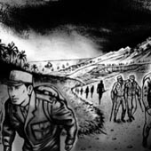
One by one, they went their different ways.
The soldier walked on alone, taking his own road home. He did not think about the other soldiers, or about the war. He thought only about the long road back to his home.
'Home,' thought the soldier. 'I know my home is at the end of this road. I just need to go on walking.'
The road felt hard under his boots, and the only sound was the noise of his boots on the road – tramp, tramp, tramp. He was tired and thirsty, and his mouth was dry as dust.
'There's no water,' he thought. 'Just dust. Dust in my mouth. Dust everywhere.'
Tramp, tramp, tramp went his boots.
'Don't stop walking,' he told himself. 'I can't stop. I mustn't stop. I'll rest when I get home. Mother will make tea, and then I can rest.'
He tried to walk faster, but he felt so tired, so tired. His feet felt heavier and heavier, and he walked more and more slowly. He wanted to lie down by the side of the road, in the dark, and stay there.
'If I lie down,' he thought, 'I'll never get up again.'
So he went on walking, one foot in front of the other, tramp, tramp, tramp.
'The war is finished,' he told himself. 'Forget the war. Just think about home. I must get home. I promised.'
The road began to go up into the hills. There were trees on each side, and their dark leaves in the night made the road dark too. The road climbed up and up into the hills. He knew his home was somewhere on the other side of the hills.
'I can see it now,' he thought. 'Our little house, so small, but always clean and quiet. I can see the lamp on the table... I can see Mother, with her long black hair. She's sitting in her chair, singing my little sister to sleep. My little sister... She was just a baby when I left. How old is she now? Three? Four? Can she talk yet?'
He felt sad, because he could not remember his little sister's face.
'But I remember Mother at the door when I went away to the war,' he thought. 'I remember her words, every one of them. Go safely, and be sure to come back to me. And I promised her. I will come home. Those were my words, and I must keep my promise to her.'
Now the road began to turn downhill, and the land beside the road fell away into fields and woods.
'I know those fields down there,' he thought. 'I know these woods. I can't remember their names, but I know my village is down in this valley. Mother's waiting, down there, at home.'
The soldier walked on, along the dark road under the trees. He was so tired. His feet felt so heavy and his mouth was so dry. He wanted to lie down in the dark and never move again. But his boots went on hitting the road –tramp, tramp, tramp.
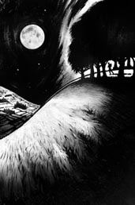
The soldier walked on, along the dark road under the trees.
'If I stop now,' he told himself, 'I'll never see Mother again. And I promised her, so I must go on walking. Rest. When I get home, I can rest. Mother will make tea. We'll sit in her quiet room and drink tea together, and then my mouth will not be so dry.'
The soldier's village looked different in the dark. There were fewer trees and gardens. There were more houses, and they looked bigger than he remembered. But the soldier knew that this was his village at last, at the end of his road. He was nearly home, and home is home.
The soldier went through his village like the wind. In no time at all, he stood outside his mother's little house. It was the smallest house in the village, and the only one that still looked the same. But the soldier did not care about the other houses.
He stood outside his mother's door. He touched the door with his hand, and it opened. Inside he saw the little clean room, the table, the lamp... Across the room his mother was lying in her bed.
'Of course,' he thought, 'It's the middle of the night. She's sleeping, of course. She works so hard. She needs to rest, like me.'
Then, for a second, the soldier thought he was in the wrong house, because the body lying in the bed was an old, old woman with white hair.
But at that moment, the body moved. His mother's eyes opened, and she looked at him and smiled. She got up and came across the room to the open door, and took his hand. Something was still lying in the bed behind her, but the soldier looked only at his mother. Still young, with her long dark hair falling around her face.
'I knew you would come back,' she said, 'I waited for you.'
'I came as fast as I could,' said the soldier, 'but it was a long road home.'
'Yes,' said his mother, 'I've waited a long time. But you are home now, at last. Sit down and rest. I will make tea.'
The soldier sat down. His mother lit the lamp and made tea, moving quietly around the room. The soldier forgot about the war, and the long road home. He felt quiet and peaceful. His mother put the tea on the table, and they both drank.
The soldier finished his tea. He said, 'I'm sorry it took so long to come home.'
'The important thing is that you have come,' said his mother. 'I've waited a long time for you. So long! But I knew you would come back in the end.'
'I promised you that I would come home,' he said.
'Yes,' said his mother. 'I knew you would keep your promise, and so I waited for you. Now you have come, we can leave together.'
They stood up. The soldier did not feel tired any more. He felt light, like a bird, like a drop of rain. He looked around his mother's room for the last time, then took his mother's hand. Behind them, on the other side of the room, there was something lying in the bed. It was the body of an old, old woman, lying very still. But the soldier did not look at it. He saw only the kind and loving face of his mother, with her long dark hair falling around her face.
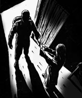
She came across the room to the open door, and took his hand.
The soldier and his mother moved quickly to the door, holding hands. They went outside into the bright starlight, and were gone.
The soldier's little sister visited her mother every day. The sister was now a woman of sixty-eight years, with three adult children of her own, and five grandchildren. Her oldest granddaughter, who was fifteen, was with her today.
The sister lived in a new, modern house just outside the city. She wanted her old mother to come and live with her, in her comfortable modern house, but the mother always said no, she would not leave her little old house. She wanted to stay in her own home.
'Why won't she come and live with us, Grandma?' asked the sister's granddaughter.
'It's because of my brother,' said the sister. 'Years ago, when I was only a baby, there was a war. My brother was a soldier. He went away to the war, and he never came home again.'
'What happened to him?' asked the granddaughter. 'Did he die?'
'I don't know,' said the sister. 'My mother never heard what happened to him. I can't remember him at all, but my mother has never forgotten him. I don't think that a day goes past when she doesn't think about him.'
So many young men went away to that war. So many did not come back. The ones who did come back were now old men, but the soldier's mother went on waiting. She would not move to a new house. Even now, when she was so old herself, she would not leave.
For the last few years, she could not get out of bed. She was not ill, but she was very tired, and she could not walk. So the sister came every day to visit her mother and to sit with her in the little house. A nurse came every day too, because the mother was so old.
Today, the sister was taking her granddaughter with her. 'It'll be good for you,' she told her granddaughter, 'to spend some time with my mother.'
'What will we have to do for her, Grandma?' asked the granddaughter.
'We'll help her sit up in bed,' said the sister. 'We'll wash her face and tidy her hair. And we'll make tea for her. When the nurse comes, we can leave.'
They were driving to the mother's house along the new road. This was a fast road that went from the city around the hills to the villages in the valley on the other side. The old road went over the hills.
'You never use the old road, do you, Grandma?' the granddaughter said.
'No, it takes too long that way,' said the sister.
'Good,' said the granddaughter. 'I don't like that road. There are lots of trees along it, and they make the road very dark. Girls at school say that if you walk there at night, you can hear a ghost.'
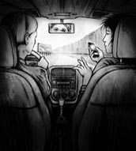
'They say that if you walk there at night, you can hear a ghost.'
The sister laughed. 'A ghost!' she said.
'It's true, Grandma!' said the granddaughter. 'That's what they say. No one's ever seen the ghost, but people have heard it. It's someone in heavy boots walking along the road – tramp, tramp, tramp.'
'Ah yes, I remember now,' said the sister. 'There is a story about the road over the hills. When I was a girl at school, years ago, people were telling the same story even then. Some ghost stories go on for ever, don't they?'
When they arrived in the village, the sister stopped the car outside her mother's little house. She opened the front door and looked inside. She was not surprised by what she saw.
'Wait outside,' she told her granddaughter quickly. 'Use your mobile phone to call an ambulance. Then wait in the car.' She did not say that a doctor was no longer necessary.
The sister shut the door and sat down next to her mother's bed. She held her mother's cold hand. Her mother looked peaceful, the sister thought. She looked happy.
There was only one thing that the sister did not understand. On the little table, on the other side of the room, there were two empty tea cups.
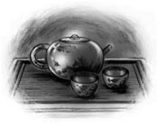
war n. fighting between countries or between groups of people 战争
sad adj. unhappy 悲伤的
tramp n. the sound of heavy walking 沉重的脚步声
thirsty adj. feeling that you want or need a drink 口渴的
dust n. dry dirt that is like powder 尘土；灰尘
valley n. the low land between mountains 山谷
peaceful adj. calm and quiet 平静的
comfortable adj. making you feel physically relaxed and satisfied 舒适的
ambulance n. a special vehicle that is used to take ill or injured people to hospital 救护车
回家的路
东亚故事
世界上每个国家都发生过许多场战争。战争结束后，士兵们得回家。但他们跟原来不同了，而他们要回去的也是一个不同的世界。战争会改变人。
以下这个故事讲的是一个来自东亚的士兵。战争极大地改变了他。这是个悲伤的故事，但从某种奇怪的角度来看，也是个快乐的故事。
长年的战争结束了，士兵要回家去。他回家的路既漫长又艰辛。
开始的时候，士兵在路上并不孤单。许多其他士兵也走在回家的路上，他们一起走了很长时间，没有人说话，只是各自想着长路尽头的家。
他们走过稻田，经过香蕉园，行过空无一人的道路，穿过寂静的村庄。房子漆黑一片，窗户里没有灯光。除了士兵和林中的风，一切都静止不动。
过了一阵子，每个人都走上了各自回家的路。一个人向右转，朝大山走去。另一个人向左转，朝大海和渔船走去。有些士兵沿着大路朝远方的城市走去，另一些则沿着小路朝丘陵走去。一个又一个，他们走上了各自不同的路。
士兵独自走在自己回家的路上。他没有去想其他士兵，也没有去想这场战争。他一心只想着回家的漫漫长路。
“家。”士兵想，“我知道家就在这条路的尽头，我只管走下去就行了。”
脚底下的路很硬，靴子踩在路上的声音是唯一的声响——咔，咔，咔。他又累又渴，嘴里像尘土一样干。
“没有水，”他想，“只有土。我的嘴里是土，到处都是土。”
他的靴子咔、咔、咔地踩在路上。
“别停下，”他对自己说，“我不能停下。我一定不能停下。到了家我再休息。妈妈会泡好茶，那时我就能休息了。”
他试图走快一点儿，但他太累，太累了。他感觉脚越来越沉，走得也越来越慢。他想在黑暗里躺倒在路边，躺下再也不动。
“要是我躺下，”他想，“我就再也起不来了。”
于是他继续走，一步又一步，咔，咔，咔。
“战争结束了，”他告诉自己，“忘记战争。只想着家。我必须回家去。我答应过的。”
路开始上坡，进入丘陵。路两边有了树；在夜里，树上暗色的叶子让路变得更加黑黢黢的。路上坡又上坡，一直进到丘陵深处。他知道自己的家就在丘陵后面的某个地方。
“我现在能看见它了，”他想，“我们的小房子，那么小，但总是又整洁又安静。我能看到桌上的灯……我能看到妈妈，她的头发又黑又长。她坐在椅子上，唱着歌哄我的妹妹睡觉。我的妹妹……我离开的时候她还是个婴儿。她现在多大了？三岁？四岁？她会说话了吗？”
他心里感到难过，因为他记不起妹妹的脸了。
“但我记得离家去参战时，妈妈在门口送别的情景。”他想，“我记得她说的话，每个字都记得。‘去吧，好好保重，一定要回到我身边来。’我答应了她，‘我会回家的。’我这么说了，就得遵守对她的许诺。”
现在路开始下坡，路旁的山地向下延伸到田野和树林。
“我认得下面那些田野。”他想，“我认得这些树林。我记不起它们的名字，但是我知道家乡的村子就在下面这条山谷里。妈妈就在山下的家里等着我。”
士兵沿着树林遮蔽下黑黢黢的道路继续往前走。他太累了，双脚那么沉，嘴里那么干。他想在黑暗里躺下，再也不挪动一下。但是他的靴子继续踏在路上——咔，咔，咔。
“如果我现在停下来，”他告诉自己，“我就再也见不到妈妈了。我答应过她的，所以我必须继续走下去。休息——等我到家，就能休息了。妈妈会泡好茶。我们会坐在她安静的房间里一起喝茶，那时我的嘴就不会这么干了。”
士兵家乡的村子在黑夜里看起来跟原来不大一样。树木和菜园比原来少了。房子变多了，而且看起来比他记忆中的要大。但是士兵知道终于到了自己的村子，就在路的尽头。他就要到家了，家就是家。
士兵像风一样穿过村子。转眼间，他就站在了母亲的小屋外。这是村里最小的房子，也是唯一一座没有变样的房子。不过士兵并不关心别的房子怎样。
他站在母亲房子的门口。他伸手碰了一下门，门开了。他看到里面整洁的小房间，看到桌子，还看到灯……在房间的另一头，母亲正躺在床上。
“当然，”他想，“现在是半夜，她当然在睡觉。她干活儿那么累，需要休息，就和我一样。”
接着，有那么一瞬间，士兵以为自己走错了房子，因为床上躺的是个白发苍苍、年纪老迈的妇人。
可就在这时，床上的人动了动。他母亲睁开眼睛看到他，露出了微笑。她从床上起来，走过房间，来到打开的门前，握住了他的手。她身后的床上还有什么东西躺着，但士兵只是看着自己的母亲。她还是那么年轻，长长的黑发从脸侧垂下来。
“我知道你会回来的。”她说，“我在等你。”
“我已经尽快往回赶了，”士兵说，“但回家的路太长了。”
“是啊，”他母亲说，“我等了好久。但是你现在终于回来了。坐下歇歇吧，我去泡茶。”
士兵坐下来。他母亲点上灯，泡了壶茶，在房间里悄无声息地走来走去。士兵忘记了那场战争，忘记了回家的漫漫长路。他觉得平静安宁。他母亲把茶放在桌上，两人一起喝茶。
士兵喝完了他的茶。他说：“我很抱歉用了这么久才回到家。”
“重要的是你回来了。”他母亲说，“我等了你很久。那么久！但是我知道你最后会回来的。”
“我答应了您要回家的。”他说。
“是啊。”他母亲说，“我知道你会遵守诺言，所以我一直等你。现在你回来了，我们可以一起离开了。”
他们站起来。士兵不再疲倦。他觉得身子轻盈，像鸟儿，也像雨滴。他最后一次环视母亲的房间，然后拉住了母亲的手。在他们身后，房间的另一头，有什么东西躺在床上。那是一个年纪老迈的妇人，躺在那里一动不动。但是士兵没有朝那里看。他的眼里只有母亲慈爱的脸和垂在她脸侧的黑色长发。
士兵和母亲手拉着手快步走到门口，跨进门外璀璨的星光，然后不见了。
士兵的妹妹每天都来看望母亲。妹妹如今已经是位68岁的老人了，有三个已长大成人的孩子和五个孙辈。她的大孙女今年15岁，今天跟她一起来了。
妹妹住在市郊一座现代化的新房子里。她想让老母亲搬来跟她一起住在舒适的现代化房子里，但母亲总是不答应。她不肯离开自己老旧的小房子，她想要住在自己的家里。
“她为什么不来跟我们一起住呢，奶奶？”妹妹的孙女问。
“因为我的哥哥。”妹妹说，“很多年前，我还是个婴儿的时候，发生过一场战争。我哥哥是个士兵。他上了战场，再也没有回来。”
“他发生了什么事？”孙女问，“他阵亡了吗？”
“我不知道。”妹妹说，“我妈妈再也没有听到他的消息。我完全不记得他了，但是我妈妈却一直忘不了他。我相信她没有一天不想起他。”
那么多年轻人去参加了那场战争。那么多人没有回来。那些回来的人如今也都老了，但是士兵的母亲一直在等他。她不愿搬到新房子去住。即便到了现在，她自己已经老迈不堪，她也不愿离开。
近几年，她已经下不了床。她没有生病，但是非常疲惫，也走不了路。于是妹妹每天都来看望母亲，陪着她坐在小屋里。还有一位护士每天也会来，因为母亲年纪实在太大了。
今天，妹妹带着孙女一起来了。“你来陪陪我妈妈是一件好事。”她对孙女说。
“我们要为她做些什么呢，奶奶？”孙女问。
“我们要扶她在床上坐起来。”妹妹说，“我们要帮她洗脸，梳头。我们还要为她泡茶。等护士来了，我们再离开。”
她们沿着新修的路开车去母亲家。这是一条高速公路，从城市绕过丘陵到达另一侧山谷里的几个村落。原来的路是翻山过去的。
“您从不走原来那条路，是吧，奶奶？”孙女说。
“是啊，走那条路花的时间太长。”妹妹说。
“这样挺好，”孙女说，“我不喜欢那条路。两边的树太多，把路遮得黑黢黢的。学校里的女生们说，如果你晚上走那条路，可以听见一个幽灵。”
妹妹笑了起来。“一个幽灵！”她说。
“是真的，奶奶！”孙女说，“她们就是这么说的。没人见过那个幽灵，但是有人听到过他发出的声音。他穿着重重的靴子走在路上——咔，咔，咔。”
“啊，是的，我现在想起来了。”妹妹说，“翻山的那条路有个故事。很多年前，我还在上学的时候，人们也在讲同样的故事。有些鬼故事会一直流传，不是吗？”
她们到了村子，妹妹把车停在了母亲的小屋外。她打开屋门，朝里面看去。屋里的情形并没有让她吃惊。
“你等在外面。”她很快地吩咐孙女，“用你的手机叫辆救护车来，然后在车里等着。”她没说叫医生来已经没有用了。
妹妹关上门，在母亲的床前坐下。她握住母亲冰凉的手。母亲看起来很安详，妹妹想。她看起来很开心。
只有一件事妹妹不太明白。房间另一头的小桌上放着两只空茶杯。
回家的路——东亚故事
The Road Home
A story from East Asia
There have been so many wars, in every country of the world. When the wars finish, the soldiers have to return home. But they are different men, and they return to a different world. War changes people.
This story is about a soldier from East Asia. War has changed him greatly. It is a sad story, but in a strange way, also a happy one.
The long war was over, and the soldier was going home. His road home was long and hard.
In the beginning, the soldier was not alone on the road. Many other soldiers were going home too, and for a long time they walked together, not speaking, just thinking about their homes at the end of the long road.
They walked across rice fields, past banana farms, along empty roads, through silent villages. No lights showed in the windows of the dark houses. Nothing moved, only the soldiers and the wind in the trees.
After a while, each man took his own road home. One turned right and went up into the mountains. Another turned left, down to the sea and the fishing boats. Some soldiers followed the road to far cities; others followed the small roads into the hills. One by one, they went their different ways.
One by one, they went their different ways.
The soldier walked on alone, taking his own road home. He did not think about the other soldiers, or about the war. He thought only about the long road back to his home.
'Home,' thought the soldier. 'I know my home is at the end of this road. I just need to go on walking.'
The road felt hard under his boots, and the only sound was the noise of his boots on the road – tramp, tramp, tramp. He was tired and thirsty, and his mouth was dry as dust.
'There's no water,' he thought. 'Just dust. Dust in my mouth. Dust everywhere.'
Tramp, tramp, tramp went his boots.
'Don't stop walking,' he told himself. 'I can't stop. I mustn't stop. I'll rest when I get home. Mother will make tea, and then I can rest.'
He tried to walk faster, but he felt so tired, so tired. His feet felt heavier and heavier, and he walked more and more slowly. He wanted to lie down by the side of the road, in the dark, and stay there.
'If I lie down,' he thought, 'I'll never get up again.'
So he went on walking, one foot in front of the other, tramp, tramp, tramp.
'The war is finished,' he told himself. 'Forget the war. Just think about home. I must get home. I promised.'
The road began to go up into the hills. There were trees on each side, and their dark leaves in the night made the road dark too. The road climbed up and up into the hills. He knew his home was somewhere on the other side of the hills.
'I can see it now,' he thought. 'Our little house, so small, but always clean and quiet. I can see the lamp on the table... I can see Mother, with her long black hair. She's sitting in her chair, singing my little sister to sleep. My little sister... She was just a baby when I left. How old is she now? Three? Four? Can she talk yet?'
He felt sad, because he could not remember his little sister's face.
'But I remember Mother at the door when I went away to the war,' he thought. 'I remember her words, every one of them. Go safely, and be sure to come back to me. And I promised her. I will come home. Those were my words, and I must keep my promise to her.'
Now the road began to turn downhill, and the land beside the road fell away into fields and woods.
'I know those fields down there,' he thought. 'I know these woods. I can't remember their names, but I know my village is down in this valley. Mother's waiting, down there, at home.'
The soldier walked on, along the dark road under the trees. He was so tired. His feet felt so heavy and his mouth was so dry. He wanted to lie down in the dark and never move again. But his boots went on hitting the road –tramp, tramp, tramp.
The soldier walked on, along the dark road under the trees.
'If I stop now,' he told himself, 'I'll never see Mother again. And I promised her, so I must go on walking. Rest. When I get home, I can rest. Mother will make tea. We'll sit in her quiet room and drink tea together, and then my mouth will not be so dry.'
The soldier's village looked different in the dark. There were fewer trees and gardens. There were more houses, and they looked bigger than he remembered. But the soldier knew that this was his village at last, at the end of his road. He was nearly home, and home is home.
The soldier went through his village like the wind. In no time at all, he stood outside his mother's little house. It was the smallest house in the village, and the only one that still looked the same. But the soldier did not care about the other houses.
He stood outside his mother's door. He touched the door with his hand, and it opened. Inside he saw the little clean room, the table, the lamp... Across the room his mother was lying in her bed.
'Of course,' he thought, 'It's the middle of the night. She's sleeping, of course. She works so hard. She needs to rest, like me.'
Then, for a second, the soldier thought he was in the wrong house, because the body lying in the bed was an old, old woman with white hair.
But at that moment, the body moved. His mother's eyes opened, and she looked at him and smiled. She got up and came across the room to the open door, and took his hand. Something was still lying in the bed behind her, but the soldier looked only at his mother. Still young, with her long dark hair falling around her face.
'I knew you would come back,' she said, 'I waited for you.'
'I came as fast as I could,' said the soldier, 'but it was a long road home.'
'Yes,' said his mother, 'I've waited a long time. But you are home now, at last. Sit down and rest. I will make tea.'
The soldier sat down. His mother lit the lamp and made tea, moving quietly around the room. The soldier forgot about the war, and the long road home. He felt quiet and peaceful. His mother put the tea on the table, and they both drank.
The soldier finished his tea. He said, 'I'm sorry it took so long to come home.'
'The important thing is that you have come,' said his mother. 'I've waited a long time for you. So long! But I knew you would come back in the end.'
'I promised you that I would come home,' he said.
'Yes,' said his mother. 'I knew you would keep your promise, and so I waited for you. Now you have come, we can leave together.'
They stood up. The soldier did not feel tired any more. He felt light, like a bird, like a drop of rain. He looked around his mother's room for the last time, then took his mother's hand. Behind them, on the other side of the room, there was something lying in the bed. It was the body of an old, old woman, lying very still. But the soldier did not look at it. He saw only the kind and loving face of his mother, with her long dark hair falling around her face.
She came across the room to the open door, and took his hand.
The soldier and his mother moved quickly to the door, holding hands. They went outside into the bright starlight, and were gone.
The soldier's little sister visited her mother every day. The sister was now a woman of sixty-eight years, with three adult children of her own, and five grandchildren. Her oldest granddaughter, who was fifteen, was with her today.
The sister lived in a new, modern house just outside the city. She wanted her old mother to come and live with her, in her comfortable modern house, but the mother always said no, she would not leave her little old house. She wanted to stay in her own home.
'Why won't she come and live with us, Grandma?' asked the sister's granddaughter.
'It's because of my brother,' said the sister. 'Years ago, when I was only a baby, there was a war. My brother was a soldier. He went away to the war, and he never came home again.'
'What happened to him?' asked the granddaughter. 'Did he die?'
'I don't know,' said the sister. 'My mother never heard what happened to him. I can't remember him at all, but my mother has never forgotten him. I don't think that a day goes past when she doesn't think about him.'
So many young men went away to that war. So many did not come back. The ones who did come back were now old men, but the soldier's mother went on waiting. She would not move to a new house. Even now, when she was so old herself, she would not leave.
For the last few years, she could not get out of bed. She was not ill, but she was very tired, and she could not walk. So the sister came every day to visit her mother and to sit with her in the little house. A nurse came every day too, because the mother was so old.
Today, the sister was taking her granddaughter with her. 'It'll be good for you,' she told her granddaughter, 'to spend some time with my mother.'
'What will we have to do for her, Grandma?' asked the granddaughter.
'We'll help her sit up in bed,' said the sister. 'We'll wash her face and tidy her hair. And we'll make tea for her. When the nurse comes, we can leave.'
They were driving to the mother's house along the new road. This was a fast road that went from the city around the hills to the villages in the valley on the other side. The old road went over the hills.
'You never use the old road, do you, Grandma?' the granddaughter said.
'No, it takes too long that way,' said the sister.
'Good,' said the granddaughter. 'I don't like that road. There are lots of trees along it, and they make the road very dark. Girls at school say that if you walk there at night, you can hear a ghost.'
'They say that if you walk there at night, you can hear a ghost.'
The sister laughed. 'A ghost!' she said.
'It's true, Grandma!' said the granddaughter. 'That's what they say. No one's ever seen the ghost, but people have heard it. It's someone in heavy boots walking along the road – tramp, tramp, tramp.'
'Ah yes, I remember now,' said the sister. 'There is a story about the road over the hills. When I was a girl at school, years ago, people were telling the same story even then. Some ghost stories go on for ever, don't they?'
When they arrived in the village, the sister stopped the car outside her mother's little house. She opened the front door and looked inside. She was not surprised by what she saw.
'Wait outside,' she told her granddaughter quickly. 'Use your mobile phone to call an ambulance. Then wait in the car.' She did not say that a doctor was no longer necessary.
The sister shut the door and sat down next to her mother's bed. She held her mother's cold hand. Her mother looked peaceful, the sister thought. She looked happy.
There was only one thing that the sister did not understand. On the little table, on the other side of the room, there were two empty tea cups.
war n. fighting between countries or between groups of people 战争
sad adj. unhappy 悲伤的
tramp n. the sound of heavy walking 沉重的脚步声
thirsty adj. feeling that you want or need a drink 口渴的
dust n. dry dirt that is like powder 尘土；灰尘
valley n. the low land between mountains 山谷
peaceful adj. calm and quiet 平静的
comfortable adj. making you feel physically relaxed and satisfied 舒适的
ambulance n. a special vehicle that is used to take ill or injured people to hospital 救护车
回家的路
东亚故事
世界上每个国家都发生过许多场战争。战争结束后，士兵们得回家。但他们跟原来不同了，而他们要回去的也是一个不同的世界。战争会改变人。
以下这个故事讲的是一个来自东亚的士兵。战争极大地改变了他。这是个悲伤的故事，但从某种奇怪的角度来看，也是个快乐的故事。
长年的战争结束了，士兵要回家去。他回家的路既漫长又艰辛。
开始的时候，士兵在路上并不孤单。许多其他士兵也走在回家的路上，他们一起走了很长时间，没有人说话，只是各自想着长路尽头的家。
他们走过稻田，经过香蕉园，行过空无一人的道路，穿过寂静的村庄。房子漆黑一片，窗户里没有灯光。除了士兵和林中的风，一切都静止不动。
过了一阵子，每个人都走上了各自回家的路。一个人向右转，朝大山走去。另一个人向左转，朝大海和渔船走去。有些士兵沿着大路朝远方的城市走去，另一些则沿着小路朝丘陵走去。一个又一个，他们走上了各自不同的路。
士兵独自走在自己回家的路上。他没有去想其他士兵，也没有去想这场战争。他一心只想着回家的漫漫长路。
“家。”士兵想，“我知道家就在这条路的尽头，我只管走下去就行了。”
脚底下的路很硬，靴子踩在路上的声音是唯一的声响——咔，咔，咔。他又累又渴，嘴里像尘土一样干。
“没有水，”他想，“只有土。我的嘴里是土，到处都是土。”
他的靴子咔、咔、咔地踩在路上。
“别停下，”他对自己说，“我不能停下。我一定不能停下。到了家我再休息。妈妈会泡好茶，那时我就能休息了。”
他试图走快一点儿，但他太累，太累了。他感觉脚越来越沉，走得也越来越慢。他想在黑暗里躺倒在路边，躺下再也不动。
“要是我躺下，”他想，“我就再也起不来了。”
于是他继续走，一步又一步，咔，咔，咔。
“战争结束了，”他告诉自己，“忘记战争。只想着家。我必须回家去。我答应过的。”
路开始上坡，进入丘陵。路两边有了树；在夜里，树上暗色的叶子让路变得更加黑黢黢的。路上坡又上坡，一直进到丘陵深处。他知道自己的家就在丘陵后面的某个地方。
“我现在能看见它了，”他想，“我们的小房子，那么小，但总是又整洁又安静。我能看到桌上的灯……我能看到妈妈，她的头发又黑又长。她坐在椅子上，唱着歌哄我的妹妹睡觉。我的妹妹……我离开的时候她还是个婴儿。她现在多大了？三岁？四岁？她会说话了吗？”
他心里感到难过，因为他记不起妹妹的脸了。
“但我记得离家去参战时，妈妈在门口送别的情景。”他想，“我记得她说的话，每个字都记得。‘去吧，好好保重，一定要回到我身边来。’我答应了她，‘我会回家的。’我这么说了，就得遵守对她的许诺。”
现在路开始下坡，路旁的山地向下延伸到田野和树林。
“我认得下面那些田野。”他想，“我认得这些树林。我记不起它们的名字，但是我知道家乡的村子就在下面这条山谷里。妈妈就在山下的家里等着我。”
士兵沿着树林遮蔽下黑黢黢的道路继续往前走。他太累了，双脚那么沉，嘴里那么干。他想在黑暗里躺下，再也不挪动一下。但是他的靴子继续踏在路上——咔，咔，咔。
“如果我现在停下来，”他告诉自己，“我就再也见不到妈妈了。我答应过她的，所以我必须继续走下去。休息——等我到家，就能休息了。妈妈会泡好茶。我们会坐在她安静的房间里一起喝茶，那时我的嘴就不会这么干了。”
士兵家乡的村子在黑夜里看起来跟原来不大一样。树木和菜园比原来少了。房子变多了，而且看起来比他记忆中的要大。但是士兵知道终于到了自己的村子，就在路的尽头。他就要到家了，家就是家。
士兵像风一样穿过村子。转眼间，他就站在了母亲的小屋外。这是村里最小的房子，也是唯一一座没有变样的房子。不过士兵并不关心别的房子怎样。
他站在母亲房子的门口。他伸手碰了一下门，门开了。他看到里面整洁的小房间，看到桌子，还看到灯……在房间的另一头，母亲正躺在床上。
“当然，”他想，“现在是半夜，她当然在睡觉。她干活儿那么累，需要休息，就和我一样。”
接着，有那么一瞬间，士兵以为自己走错了房子，因为床上躺的是个白发苍苍、年纪老迈的妇人。
可就在这时，床上的人动了动。他母亲睁开眼睛看到他，露出了微笑。她从床上起来，走过房间，来到打开的门前，握住了他的手。她身后的床上还有什么东西躺着，但士兵只是看着自己的母亲。她还是那么年轻，长长的黑发从脸侧垂下来。
“我知道你会回来的。”她说，“我在等你。”
“我已经尽快往回赶了，”士兵说，“但回家的路太长了。”
“是啊，”他母亲说，“我等了好久。但是你现在终于回来了。坐下歇歇吧，我去泡茶。”
士兵坐下来。他母亲点上灯，泡了壶茶，在房间里悄无声息地走来走去。士兵忘记了那场战争，忘记了回家的漫漫长路。他觉得平静安宁。他母亲把茶放在桌上，两人一起喝茶。
士兵喝完了他的茶。他说：“我很抱歉用了这么久才回到家。”
“重要的是你回来了。”他母亲说，“我等了你很久。那么久！但是我知道你最后会回来的。”
“我答应了您要回家的。”他说。
“是啊。”他母亲说，“我知道你会遵守诺言，所以我一直等你。现在你回来了，我们可以一起离开了。”
他们站起来。士兵不再疲倦。他觉得身子轻盈，像鸟儿，也像雨滴。他最后一次环视母亲的房间，然后拉住了母亲的手。在他们身后，房间的另一头，有什么东西躺在床上。那是一个年纪老迈的妇人，躺在那里一动不动。但是士兵没有朝那里看。他的眼里只有母亲慈爱的脸和垂在她脸侧的黑色长发。
士兵和母亲手拉着手快步走到门口，跨进门外璀璨的星光，然后不见了。
士兵的妹妹每天都来看望母亲。妹妹如今已经是位68岁的老人了，有三个已长大成人的孩子和五个孙辈。她的大孙女今年15岁，今天跟她一起来了。
妹妹住在市郊一座现代化的新房子里。她想让老母亲搬来跟她一起住在舒适的现代化房子里，但母亲总是不答应。她不肯离开自己老旧的小房子，她想要住在自己的家里。
“她为什么不来跟我们一起住呢，奶奶？”妹妹的孙女问。
“因为我的哥哥。”妹妹说，“很多年前，我还是个婴儿的时候，发生过一场战争。我哥哥是个士兵。他上了战场，再也没有回来。”
“他发生了什么事？”孙女问，“他阵亡了吗？”
“我不知道。”妹妹说，“我妈妈再也没有听到他的消息。我完全不记得他了，但是我妈妈却一直忘不了他。我相信她没有一天不想起他。”
那么多年轻人去参加了那场战争。那么多人没有回来。那些回来的人如今也都老了，但是士兵的母亲一直在等他。她不愿搬到新房子去住。即便到了现在，她自己已经老迈不堪，她也不愿离开。
近几年，她已经下不了床。她没有生病，但是非常疲惫，也走不了路。于是妹妹每天都来看望母亲，陪着她坐在小屋里。还有一位护士每天也会来，因为母亲年纪实在太大了。
今天，妹妹带着孙女一起来了。“你来陪陪我妈妈是一件好事。”她对孙女说。
“我们要为她做些什么呢，奶奶？”孙女问。
“我们要扶她在床上坐起来。”妹妹说，“我们要帮她洗脸，梳头。我们还要为她泡茶。等护士来了，我们再离开。”
她们沿着新修的路开车去母亲家。这是一条高速公路，从城市绕过丘陵到达另一侧山谷里的几个村落。原来的路是翻山过去的。
“您从不走原来那条路，是吧，奶奶？”孙女说。
“是啊，走那条路花的时间太长。”妹妹说。
“这样挺好，”孙女说，“我不喜欢那条路。两边的树太多，把路遮得黑黢黢的。学校里的女生们说，如果你晚上走那条路，可以听见一个幽灵。”
妹妹笑了起来。“一个幽灵！”她说。
“是真的，奶奶！”孙女说，“她们就是这么说的。没人见过那个幽灵，但是有人听到过他发出的声音。他穿着重重的靴子走在路上——咔，咔，咔。”
“啊，是的，我现在想起来了。”妹妹说，“翻山的那条路有个故事。很多年前，我还在上学的时候，人们也在讲同样的故事。有些鬼故事会一直流传，不是吗？”
她们到了村子，妹妹把车停在了母亲的小屋外。她打开屋门，朝里面看去。屋里的情形并没有让她吃惊。
“你等在外面。”她很快地吩咐孙女，“用你的手机叫辆救护车来，然后在车里等着。”她没说叫医生来已经没有用了。
妹妹关上门，在母亲的床前坐下。她握住母亲冰凉的手。母亲看起来很安详，妹妹想。她看起来很开心。
只有一件事妹妹不太明白。房间另一头的小桌上放着两只空茶杯。
ACTIVITIES: Before Reading
ACTIVITIES
Before Reading
1 Read the introduction of the book, and the back cover. How much do you know now about the stories? Tick one box for each sentence.
1) There is a ghost or monster in every story.
YES □／NO □
2) In one story a soldier goes away to war.
YES □／NO □
3) All the stories come from different countries.
YES □／NO □
4) Sonja's grandfather was a troll.
YES □／NO □
5) Some people believe in ghosts.
YES □／NO □
6) Science can explain everything that happens.
YES □／NO □
2 What can you guess about these stories? Read these sentences, and put a circle round the words that you like best.
1) Sonja's grandfather hates / likes trolls.
2) Sonja sees / does not see a troll in her garden.
3) Abdul has a frightening / wonderful ride with a stranger.
4) Abdul loses / forgets the computer game for his little brother Omar.
5) The soldier finds / does not find his mother at home.
ACTIVITIES: After Reading
ACTIVITIES
After Reading
1 Here are the thoughts of three characters (one from each story). Who is thinking, and in which story? Who are they thinking about, and what is happening in the story?
1) 'Why can't I stay up a bit later? I'm not at all sleepy! I did want to see him – why hasn't he come? He always brings me a gift, and there's that new computer game that all my friends are talking about. Perhaps he's bringing it...'
2) 'It's a long time to wait, a very long time. One day soon I'll go to sleep, and never wake up. But I know he'll come back – he promised. He'll come through the door, and I'll make tea for him, the way I always did. That's why I must stay here, in this house, ready for his return...'
3) 'Well, that's a good job done – it'll keep them away. And it's good that my granddaughter helped me. She needs to learn about life's dangers. My son and his wife just laugh, and say they don't believe in these things, but they haven't seen what I've seen...'
2 Use the clues to complete this crossword with words from the stories. All the words go across.
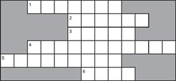
1) The soldier was _____, but there was no water to drink.
2) Sonja's parents don't believe in _____.
3) The wet clothes on the washing line were _____ themselves into knots.
4) The driver of the black car was wearing a _____ robe.
5) The old woman's family called an _____ to the house.
6) Abdul bought a computer _____ for his little brother.
3 Match these parts of sentences about the people in the stories. There are three parts to each sentence. Then choose the best linking words to join the parts together.
First parts of the sentence
1) Sonja's grandfather puts something metal in a tree,...
2) The soldier wants to see his mother,...
3) Abdul doesn't check his car...
Second parts of the sentence
4) while / before he leaves Buraimi,...
5) why / because he doesn't want a troll in his garden,...
6) which / who will make tea for him,...
Third parts of the sentence
7) after / before he gets home.
8) but / what Sonja's parents don't do that.
9) when / so he has to get in the stranger's car.
4 A Gift for Omar. What do you think happens next in this story? Answer these questions. Then, using your answers and your own ideas, write a new paragraph to end the story.
1) What does Abdul do with the computer game? He...
a) throws it away.
b) takes it back to the shop.
c) gives it to Omar.
d) burns it.
2) What happens with the driver of the black car?
a) Nobody ever sees him again.
b) He drives behind Abdul all the way back to Buraimi.
c) He appears on the screen in the computer game.
d) He waits in his car outside Abdul's family's house.
5 Troll. When Sonja was much older, she talked to her friend Karin about the troll in her garden. Their conversation is in the wrong order. Put it in the right order and add the speakers' names. Karin speaks first (number 5).
1) _____ 'Of course there was a wind!'
2) _____ 'Well, I didn't actually see one, but the clothes blew about on the washing line!'
3) _____ 'Come on, Sonja! No one believes that kind of thing any more!'
4) _____ 'But there wasn't any wind at all that day!'
5) _____ 'You say you saw a troll in the garden?'
6) _____ 'No, really, there wasn't. The troll was doing it – he was tying the clothes into knots!'
7) _____ 'That's what clothes do when it's windy!'
6 The Road Home. Here is a page from the granddaughter's diary some months after the old woman's death. Choose one suitable word to fill each gap.
Today I went back to Great-Grandma's _____. The people there told me something _____. They don't hear the ghostly boots _____ along the road any more. Even _____, they all agree the ghostly sounds _____ suddenly, the day after my poor _____ death! None of us can really _____ it.
7 Look at these possible new titles for the four stories. Match all the titles with the stories. Which one do you like best for each story? Explain why.
| Keeping a Promise | The Man in Dark Glasses |
| Route 21 | The Washing Line |
| The Saw in the Tree | Two Cups of Tea |
8 What did you think of the stories? Use the table below to make sentences about them. Use as many words as you like to finish the sentences.
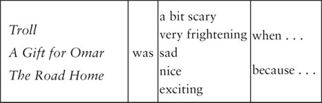
封底
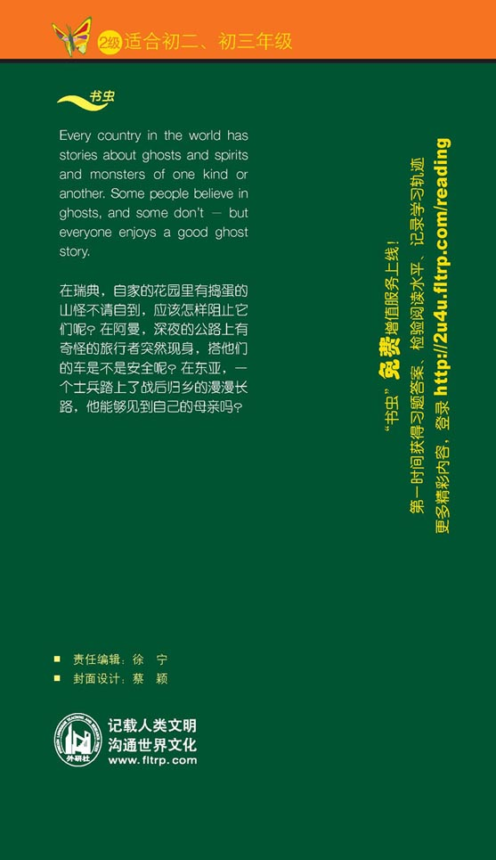